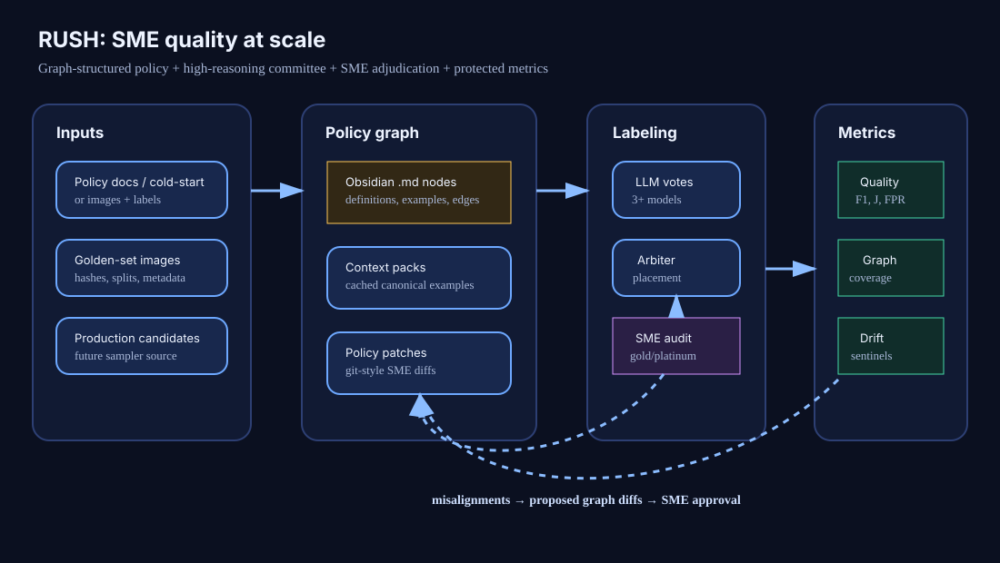

Bulk model labeling
Multiple models, structured outputs, confidence, policy-node citations, abstain support.
Bulk LLM image audit, grounded in SME policy
Multiple LLMs label the same images. Consensus is the audit signal; disagreement is where you look.
§1 Sample
Start with a balanced catalog slice: real image manifests when present, deterministic synthetics otherwise.
§2 Label
Start a local labeling run, then pick a completed export to populate every scoring panel below.
§3 Score
Consensus, misalignment, and borderline views share the selected run and stay in one audit surface.
Every model votes per image. Unanimous, majority, tie, and majority-vs-SME misses are flagged fast.
Per-image SME truth vs model labels. Disagreement reasons link to any proposed policy patch; prepared-image audit metadata (sha256, dims, mime) is surfaced inline when present.
Boundary cases grouped by L0 bucket (gen_ai / not_gen_ai / abstain). Will fan out to L2 nodes as the graph grows.
§4 Quality
Compare accuracy, F1, FPR, and FNR by labeler, filtered by run or policy version.
§5 Insights
Majority-wrong rows, model disagreement, boundary concentration, and recurring pair disagreement.
§6 Grow
This shell keeps the live graph and proposal review together. Phase 2c will add growth controls and version history.
Policy nodes and edges read live from policy-graph/Generative_AI/<v>/*.md. Hover to trace neighbors; click to drill into subtrees.
Provider images are prepared for labeling with longest edge ≤1024 and JPEG quality around 85; policy truth stays in Markdown nodes and edges.json.
Diffs are generated from scored runs and remain pending until an SME accepts or rejects them.
§7 About
System view
Policy data and golden examples feed the graph, labeling, audit, metrics, and diffs.

Theory
RUSH is used here as a working acronym: Review, Update, SME-feedback, Hone. Treat that expansion as a placeholder until the project adopts a canonical name, but it captures the operating loop: human review creates evidence, the policy graph updates, subject-matter experts approve or reject the change, and the system hones future labels.
The system starts with a cold-start policy graph, not a free-form prompt blob. Bulk LLM labeling cites policy nodes, compares against SME truth, and turns repeated ambiguity into proposed graph diffs.
| Dimension | Working assumption | Implication |
|---|---|---|
| Synthesis cost | Anthropic ≈ $42 / 1k images vs OpenAI ≈ $5 / 1k images | Use expensive synthesis only where it buys better policy patches or audit explanations. |
| Label quality | Reasoning-tier models can improve boundary handling and policy-node citation quality. | Measure by scored runs, not vibes: accuracy, F1, false positives, false negatives, abstains, and review burden. |
| Review allocation | Consensus rows are cheaper to accept; split or majority-wrong rows deserve SME attention. | Route scarce human time to the highest expected policy-learning value. |
SMEs do not rubber-stamp model labels. They adjudicate evidence, clarify boundaries, and approve durable graph changes that future runs can cite.
Related framing: active learning, human-in-the-loop annotation, weak supervision, model auditing, and dataset governance. RUSH adapts those ideas to policy-versioned visual classification with explicit cost and review-burden accounting.
Future work
Multiple models, structured outputs, confidence, policy-node citations, abstain support.
Compare LLM labels to SME truth; separate correlated failure from useful consensus.
Turn repeated ambiguity into graph patches: nodes, examples, exceptions, rejected memory.
Per-model accuracy, F1, FPR/FNR, coverage, CIs, and review burden by policy version.